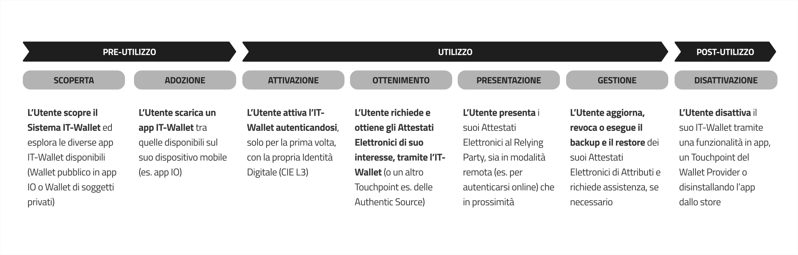
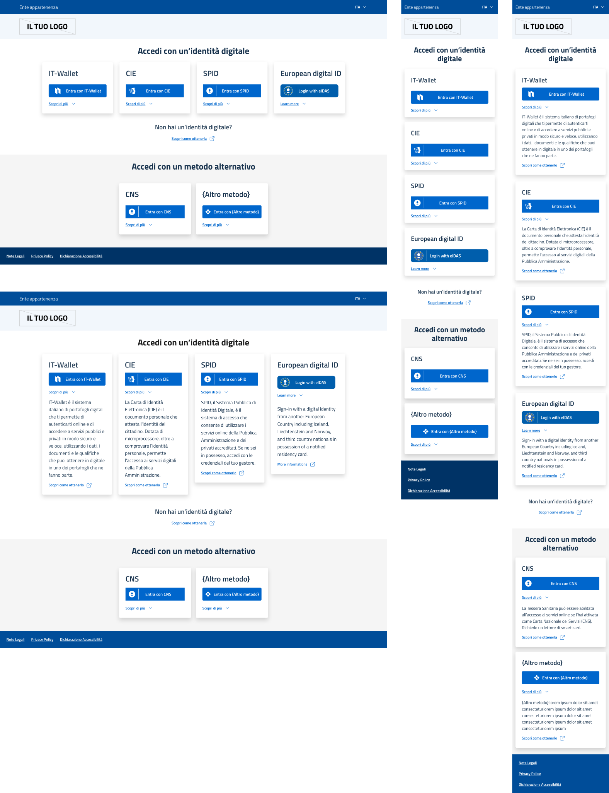
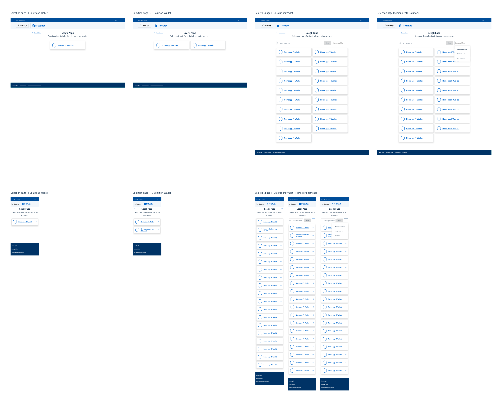
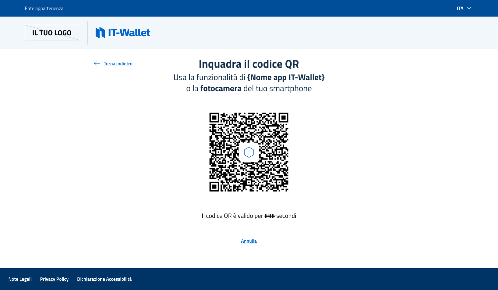
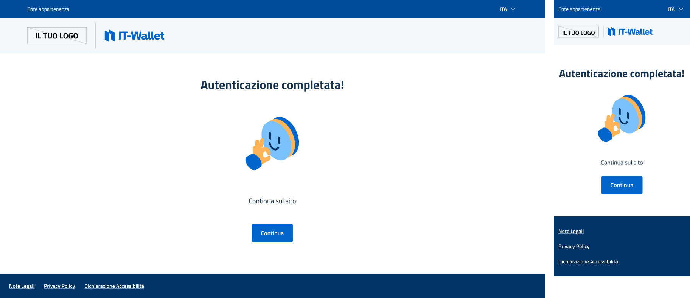
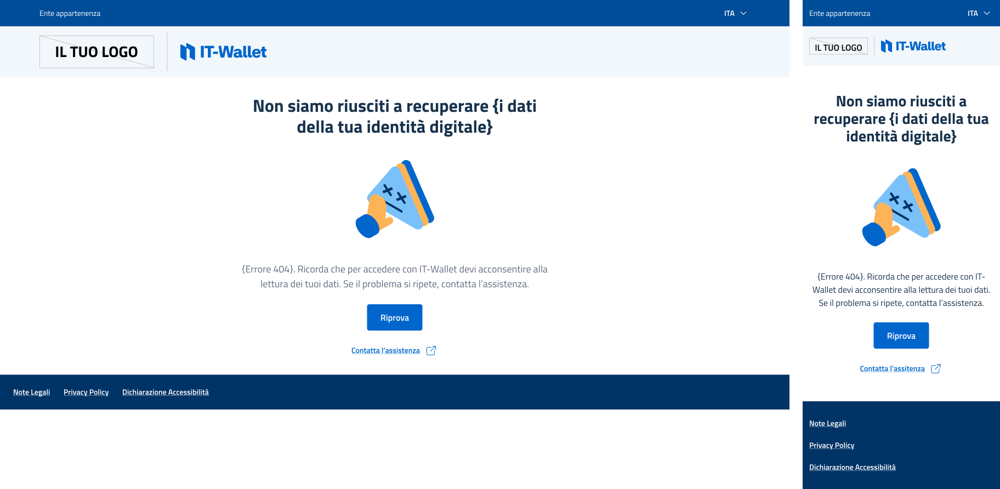

4. Design dell'Esperienza Utente¶
4.1. Principi di Design¶
Il Sistema IT-Wallet si basa sul paradigma del Portafoglio di Identità Digitale e ha l'obiettivo di fornire agli Utenti un'esperienza di accesso ai servizi più semplice, veloce e sicura.
La Soluzione Wallet rappresenta il principale Touchpoint e consente agli Utenti di utilizzare e gestire il proprio PID e i propri Attributi nelle interazioni con soggetti pubblici o privati, sia in contesti fisici che digitali. Il corretto funzionamento del servizio, tuttavia, si fonda su un'ampia rete di interazioni tra diversi Touchpoint e Soluzioni Tecniche, che ne supportano l'erogazione e incidono direttamente sull'Esperienza Utente.
Per garantire un'elevata qualità del servizio dal punto di vista dell'Esperienza Utente, gli Attori Primari, siano essi enti pubblici o privati, DEVONO assicurare l'usabilità e l'accessibilità delle proprie Soluzioni Tecniche, in allineamento con gli elementi distintivi del Sistema IT-Wallet. Nello specifico:
Usabilità: le Soluzioni Tecniche DEVONO essere progettate e mantenute per garantire elevanti standard di usabilità, allo scopo di facilitare l'adozione del servizio e ridurre la necessità di supporto. Gli enti pubblici DEVONO aderire alle [LG_DESIGN], mentre gli enti privati POSSONO prenderle a riferimento come buone pratiche;
Accessibilità: le Soluzioni Tecniche DEVONO essere progettate e mantenute per garantire elevati standard di accessibilità, allo scopo di garantire accesso al servizio indipendentemente da capacità o competenze tecnologiche individuali o da vincoli esterni e di contesto. Gli enti pubblici DEVONO aderire alle [RIF_ACCESSIBILITÀ], mentre gli enti privati DEVONO rispettare quanto previsto dalla normativa vigente;
Coerenza: le Soluzioni Tecniche DEVONO essere progettate e mantenute in coerenza con la Brand Identity del Sistema IT-Wallet e i requisiti funzionali relativi all'Esperienza Utente descritti in queste specifiche, per promuovere la riconoscibilità dei componenti, garantire la coerenza complessiva del sistema e minimizzare il carico cognitivo per l'Utente.
4.2. Panoramica delle Funzionalità¶
Il Sistema IT-Wallet offre all'utente un'esperienza più semplice, veloce e sicura di accesso ai servizi. Tale servizio si concretizza per l'Utente nella possibilità di utilizzare una Soluzione Wallet, la cui esperienza di fruizione è scandita in tre macro-fasi: pre-utilizzo, utilizzo e post-utilizzo.

Fig. 4.1 Fasi dell'Esperienza Utente di utilizzo di un'Istanza del Wallet¶
Le sezioni a seguire si focalizzano sulle macro-fasi di utilizzo e post-utilizzo. Esse definiscono i requisiti funzionali a supporto dell'Esperienza Utente relativi alle fasi di attivazione ottenimento, presentazione, gestione e disattivazione, unitamente ai requisiti di interazione con il servizio in termini di gestione degli errori, richiesta di assistenza e raccolta feedback.
La documentazione e le risorse aggiuntive sono rese disponibili nella sezione Risorse Ufficiali.
Le Risorse Ufficiali descrivono le modalità di interazione Utente-Istanza del Wallet e le buone pratiche di progettazione al fine di promuovere coerenza tra le diverse Soluzioni Wallet, in termini di modalità di fruizione delle funzionalità.
Per garantire un’implementazione corretta e coerente, gli Attori Primari:
DEVONO utilizzare esclusivamente le Risorse Ufficiali e DEVONO rispettare le tutte le relative specifiche di utilizzo fornite;
POSSONO scegliere quale configurazione implementare, tra quelle rese disponibili, ma DEVONO comunque garantire il corretto utilizzo dei componenti atomici come i Pulsanti di Ingaggio;
DEVONO garantire il costante aggiornamento delle risorse utilizzate, in linea con l'ultima versione resa disponibile.
4.3. Attivazione dell'Istanza del Wallet¶
L'attivazione è il passaggio necessario per abilitare l'Utente all'utilizzo delle funzionalità della Soluzione Wallet per l'ottenimento, la presentazione e la gestione dei propri Attestati Elettronici in modo sicuro. Il processo di attivazione consiste in un'operazione di Autenticazione dell'Utente sull'Istanza del Wallet tramite la propria identità digitale che consente la generazione del PID.
Di seguito i requisiti di Esperienza Utente che il Wallet Provider DEVE garantire attraverso la propria Soluzione Wallet:
l'Utente scarica la Soluzione Wallet sul suo dispositivo così da generare la propria Istanza del Wallet;
l'Utente imposta un metodo di sblocco per la sua Istanza del Wallet se non è già stato impostato in precedenza nell'app. In aggiunta al PIN, l'Utente può decidere di usare il metodo di sblocco usato per il dispositivo e gestito a livello di sistema operativo (e.g. autenticazione biometrica) come alternativa al PIN. L'Utente utilizza il metodo di sblocco ogni qual volta è richiesta un'autorizzazione a garanzia della sicurezza e della protezione delle proprie informazioni;
l'Utente prende visione di tutte le informazioni rilevanti sull'attivazione e sulle modalità di utilizzo del servizio. L'Utente inoltre prende visione di eventuali informative del Fornitore di Wallet e del PID Provider e/o termini e condizioni d'uso del servizio. L'Utente dà il proprio consenso per proseguire oppure lo nega per annullare l'operazione;
l'Utente sceglie una tra le modalità di Autenticazione disponibili;
l‘Utente conclude il flusso di Autenticazione sul servizio del National Identity Provider;
l'Utente riceve conferma dell'esito del processo di Autenticazione e, se positivo, visualizza l'anteprima del proprio PID. L'Utente conferma le informazioni mostrate in anteprima per procedere all'attivazione dell'Istanza del Wallet oppure annulla l'operazione;
l'Utente autorizza l'operazione utilizzando la modalità di sblocco precedentemente impostata;
l'Utente visualizza l'esito positivo dell'avvenuta attivazione dell'Istanza del Wallet.
Il Fornitore di Wallet DEVE permettere all'Utente in ogni momento di rimuovere il PID ottenuto durante la fase di Attivazione. Inoltre, il PID Provider DOVREBBE permettere all'Utente di revocare il PID ottenuto, tramite uno specifico Touchpoint. Il Fornitore di Wallet DEVE permettere all'Utente di richiedere la disattivazione della propria Istanza del Wallet, anche in assenza del dispositivo su cui è stata installata. Per approfondimenti si rimanda alle sezioni Disattivazione dell'Istanza del Wallet e Gestione degli Attestati Elettronici.
In caso di errori nell'utilizzo della Istanza del Wallet, il Fornitore di Wallet DEVE garantire all'Utente la visualizzazione di messaggi coerenti che lo informino e guidino alla loro risoluzione. Per approfondimenti si rimanda alla sezione Gestione degli errori.
4.3.1. Focus sul PID – Dati di Identificazione della Persona¶
Il PID (Person Identification Data) si riferisce a un set minimo verificato di informazioni sull'identità dell'Utente (vedere Modello di Dati degli Attestati Elettronici) emesso come risultato del processo di attivazione e reso disponibile nell'Istanza del Wallet. Di seguito sono riportati i requisiti per la visualizzazione e l'utilizzo del PID a cui ogni Fornitore di Wallet DEVE aderire, al fine di fornire un'esperienza di consultazione e utilizzo coerente e accessibile:
Il PID DEVE essere visualizzato correttamente su tutti i dispositivi, garantendo un'esperienza coerente su schermi di dimensioni diverse;
Il PID DEVE essere denominato come definito dal Fornitore PID;
Il PID DEVE visualizzare il suo stato se diverso da valido per fornire trasparenza sul suo ciclo di vita e PUÒ visualizzarlo se valido. Dettagli specifici sullo stato del PID, se non valido, POSSONO essere forniti (ad esempio, il motivo per cui il PID è stato revocato);
Il PID DEVE includere Pulsanti di Ingaggio per consentire la gestione del ciclo di vita e permettere all'Utente di revocare il PID, quindi l'intera Istanza del Wallet con tutte le EAA emesse, o di aggiornare il PID in qualsiasi momento (vedere Gestione degli Attestati Elettronici);
Il PID DEVE essere un elemento interattivo, affinché l'Utente possa essere autenticato da un Relying Party in un contesto digitale (vedere Autenticazione), per accedere ai servizi in contesti di prossimità e per richiedere l'emissione di ulteriori EAA (vedere Ottenimento degli Attestati Elettronici di Attributi);
Il PID DEVE visualizzare un metodo di assistenza da parte del Fornitore PID (vedere Assistenza Utente);
Il PID DEVE essere riconoscibile dall'Utente e distinguibile da altri EAA;
Il PID DEVE essere denominato con la convenzione di denominazione che sarà definita nella versione futura di questo documento, evitando termini personalizzati o tecnici come "Person Identification Data" o il suo acronimo "PID";
La rappresentazione del PID DEVE aderire a un insieme definito di specifiche fornite dal Fornitore PID per garantire riconoscibilità, coerenza e omogeneità tra diverse Soluzioni Wallet.
Il Fornitore PID DEVE:
Implementare un nome/convenzione di denominazione per riferirsi al PID, per garantire coerenza tra tutte le Soluzioni Wallet;
Definire un insieme chiaro di specifiche per il PID per garantire l'identificazione e la rappresentazione coerenti del PID tra diverse Soluzioni Wallet, in termini di format, struttura e standard di aspetto (ad esempio colore, immagine di sfondo, ecc.).
4.4. Ottenimento degli Attestati Elettronici di Attributi¶
Ad attivazione conclusa, l'Utente PUÒ ottenere uno o più Attestati Elettronici di Attributi all'interno della sua Istanza del Wallet.
A seconda delle specifiche esigenze dell'Utente, della tipologia di Attestato Elettronico di Attributi e delle disponibilità offerte dal Fornitore di Wallet, dal Fornitore di Attestati Elettronici di Attributi e dalla Fonte Autentica, l'ottenimento degli Attestati Elettronici di Attributi può avvenire attraverso due modalità:
dal Catalogo dell'Istanza del Wallet: l'Utente esplora l'elenco degli Attestati Elettronici di Attributi messi a disposizione dalla Soluzione Wallet, seleziona quello di suo interesse e avvia la procedura di richiesta che si conclude con l'ottenimento dell'Attestato Elettronico di Attributi nell'Istanza del Wallet);
da un Touchpoint della Fonte Autentica (o del Fornitore di Attestati Elettronici di Attributi qualora coincida con la Fonte Autentica): l'Utente interagisce col servizio digitale della Fonte Autentica che gli permette di ottenere nella sua Istanza del Wallet uno specifico Attestato Elettronico di Attributi tramite un Pulsante di Ingaggio.
Nonostante le modalità di avvio della richiesta siano diverse, i flussi di ottenimento condividono una struttura e un processo simili.
4.4.1. Ottenimento dal Catalogo dell'Istanza del Wallet¶
Di seguito, sono illustrati i requisiti dell'Esperienza Utente del flusso di ottenimento di un Attestato Elettronico di Attributi dal Catalogo che il Fornitore di Wallet DEVE garantire attraverso la propria Soluzione Wallet:
l'Utente accede alla propria Istanza del Wallet utilizzando la modalità di sblocco precedentemente impostata;
l'Utente seleziona l'Attestato Elettronico di Attributi che intende aggiungere alla sua Istanza del Wallet scegliendo tra quelli disponibili nel Catalogo;
l’Utente seleziona da quale Fornitore di Attestati Elettronici vuole ottenere l’Attestato Elettronico di Attributi, se presente più di uno;
l’Utente visualizza eventuali informazioni aggiuntive sui requisiti e/o limitazioni relative all’ottenimento dell’Attestato Elettronico di Attributi, se previste dalla Fonte Autentica;
l'Utente prende visione dei dati del PID, qualora richiesti dalla Fonte Autentica per l'ottenimento dell'Attestato Elettronico di Attributi, il nome del relativo Fornitore di Attestati Elettronici di Attributi e di eventuali informative. L'Utente dà il proprio consenso per poter proseguire presentando i dati del PID o altri Attributi al Fornitore di Attestati Elettronici di Attributi oppure annulla l'operazione;
l’Utente visualizza eventuali informazioni aggiuntive sui requisiti e/o limitazioni relative all’ottenimento dell’Attestato Elettronico di Attributi, provenienti dalla Fonte Autentica;
l'Utente visualizza l'anteprima dell'Attestato Elettronico di Attributi. L'Utente conferma i dati mostrati in anteprima per procedere all'ottenimento oppure annulla l'operazione;
l'Utente autorizza l'operazione utilizzando la modalità di sblocco precedentemente impostata;
l'Utente visualizza l'esito positivo dell'ottenimento avvenuto;
l'Utente visualizza i dettagli dell'Attestato Elettronico di Attributi ottenuto ovvero: i dati in esso contenuti, il nome del Fornitore di Attestati Elettronici di Attributi che ha emesso l'Attestato Elettronico di Attributi e il nome della Fonte Autentica;
l'Utente ha evidenza di tutti gli Attestati Elettronici ottenuti navigando la sua Istanza del Wallet.
La Fonte Autentica PUÒ fornire all’Utente delle informazioni aggiuntive relative a un Attestato Elettronico di Attributi. Tali informazioni DEVONO essere mostrate dal Fornitore di Wallet all’Utente nell’Istanza del Wallet prima di avviare l’effettivo flusso di ottenimento dell’Attestato Elettronico di Attributi. Al fine di redigere correttamente questo contenuto informativo, la Fonte Autentica:
DEVE utilizzare un linguaggio chiaro (e.g. evitare termini tecnici o complessi), essenziale (es. evitare testi eccessivamente lunghi o articolati) e inclusivo (es. evitare i verbi abilisti) seguendo le buone pratiche di scrittura, linguaggio e tono di voce descritte nelle [RIF_ACCESSIBILITÀ] e, nel caso di enti pubblici, nelle [LG_DESIGN];
DEVE attenersi allo scopo specifico del testo, ossia quello di comunicare informazioni utili all’Utente prima di intraprendere il processo di ottenimento (es. elencare i prerequisiti o dichiarare delle limitazioni che potrebbero influenzare il buon esito della procedura di ottenimento);
DEVE garantire l’aggiornamento costante delle informazioni;
DEVE prevedere un titolo e un testo all’interno del quale PUÒ includere il riferimento a canali esterni per indirizzare verso una procedura, approfondire un determinato argomento e/o aprire richieste di supporto.
Segue un esempio di testo informativo:
Titolo: Hai già il documento fisico?
Testo: Per ottenere la versione digitale del [Nome documento] devi aver già ottenuto il relativo documento fisico. Se vuoi avere maggiori dettagli, [leggi più informazioni] (URL).
Per approfondimenti si rimanda alla sezione Catalogo degli Attestati Elettronici (vedi claim user_information).
Il Fornitore di Wallet DEVE permettere all'Utente di rimuovere un Attestato Elettronico di Attributi dalla sua Istanza del Wallet in ogni momento. In caso di assenza del dispositivo su cui è stata attivata l'Istanza del Wallet, il Fornitore di Wallet DEVE permettere all'Utente di disattivare l'intera Istanza del Wallet tramite un Touchpoint dedicato. Inoltre, i Fornitori di Attestati Elettronici di Attributi DOVREBBERO permettere all'Utente la revoca degli Attestati Elettronici ottenuti, tramite specifici Touchpoint. Per approfondimenti si rimanda alle sezioni Disattivazione dell'Istanza del Wallet e Gestione degli Attestati Elettronici.
In caso di problemi di comunicazione tra i sistemi del Fornitore di Attestati Elettronici di Attributi e della Fonte Autentica o in presenza di processi amministrativi o tecnici che non consentono di fornire immediatamente l'Attestato Elettronico di Attributi, gli attori coinvolti POSSONO gestire il flusso di ottenimento in modalità differita. In questo caso, il Fornitore di Wallet DEVE garantire che:
l'Utente, giunto all'ultimo step del processo, visualizzi un messaggio che lo invita ad attendere il momento in cui l'Attestato Elettronico di Attributi potrà essere rilasciato;
l'Utente venga informato dal Fornitore di Attestati Elettronici di Attributi non appena l'Attestato Elettronico di Attributi è disponibile.
In caso di dati errati all'interno di un Attestato Elettronico di Attributi già ottenuto o in fase di ottenimento, il Fornitore di Wallet DOVREBBE garantire all'Utente un'adeguata assistenza attraverso la propria Istanza del Wallet. Per approfondimenti si rimanda alla sezione Assistenza Utente.
In caso di errori nell'utilizzo della Istanza del Wallet, il Fornitore di Wallet DEVE garantire all'Utente la visualizzazione di messaggi coerenti che lo informino e guidino alla loro risoluzione. Per approfondimenti si rimanda alla sezione Gestione degli errori.
4.4.2. Ottenimento dal Touchpoint della Fonte Autentica¶
Di seguito sono illustrati i requisiti dell'Esperienza Utente del flusso di ottenimento di un Attestato Elettronico di Attributi dal Touchpoint della Fonte Autentica che questa DEVE garantire attraverso il proprio Touchpoint:
L’Utente interagisce con il Pulsante di Ingaggio chiaramente esposto nell’interfaccia del Touchpoint;
L’Utente seleziona la Soluzione Wallet con la quale procedere, attraverso un’interfaccia che DOVREBBE seguire le indicazioni e le funzionalità previste per la Selection Page descritta nella sezione Autenticazione;
(solo cross-device) L’Utente scansiona un QR code che invoca l’apertura dell’Istanza del Wallet prescelta, attraverso un’interfaccia che DOVREBBE seguire le indicazioni e le funzionalità previste per la QR Code Page descritta nella sezione Autenticazione;
(solo cross-device) L’Utente visualizza un messaggio di invito a continuare sulla propria Istanza del Wallet, attraverso un’interfaccia che DOVREBBE seguire le indicazioni e le funzionalità previste per la Waiting Page descritta nella sezione Autenticazione;
l'Utente accede alla propria Istanza del Wallet utilizzando la modalità di sblocco precedentemente impostata;
L’Utente visualizza eventuali informazioni aggiuntive sui requisiti e/o limitazioni relative all’ottenimento dell’Attestato Elettronico di Attributi, provenienti dalla Fonte Autentica;
l'Utente prende visione dei dati del PID, qualora richiesti dalla Fonte Autentica per l'ottenimento dell'Attestato Elettronico di Attributi, il nome del relativo Fornitore di Attestati Elettronici di Attributi e di eventuali informative. L'Utente dà il proprio consenso per poter proseguire presentando i dati del PID o altri Attributi al Fornitore di Attestati Elettronici di Attributi oppure annulla l'operazione;
l'Utente visualizza l'anteprima dell'Attestato Elettronico di Attributi. L'Utente conferma i dati mostrati in anteprima per procedere all'ottenimento oppure annulla l'operazione;
l'Utente autorizza l'operazione utilizzando la modalità di sblocco precedentemente impostata;
l'Utente visualizza l'esito positivo dell'ottenimento avvenuto;
l'Utente visualizza i dettagli dell'Attestato Elettronico di Attributi ottenuto ovvero: i dati in esso contenuti, il nome del Fornitore di Attestati Elettronici di Attributi che ha emesso l'Attestato Elettronico di Attributi e il nome della Fonte Autentica.
In caso di errori nell'ottenimento dell'Attestato Elettronico di Attributi, la Fonte Autentica DEVE garantire all'Utente la visualizzazione di messaggi coerenti che lo informino e guidino alla loro risoluzione. Per approfondimenti si rimanda alla sezione Gestione degli errori.
4.4.3. Focus sugli Attestati Elettronici di Attributi¶
Gli Attestati Elettronici di Attributi (EAA) ottenuti all'interno dell'Istanza del Wallet DOVREBBERO essere visualizzate in un elenco all'interno di una Vista Anteprima. In questo caso, ogni EAA DEVE garantire un elevato livello di riconoscibilità e accessibilità [RIF_ACCESSIBILITÀ] delle informazioni contenute. Di seguito sono riportati i requisiti per la visualizzazione dell'EAA a cui ogni Fornitore di Wallet DEVE aderire per fornire un'esperienza di consultazione e utilizzo coerente e accessibile:
L'EAA DEVE essere visualizzata correttamente su tutti i dispositivi, garantendo un'esperienza coerente su schermi di dimensioni diverse;
Il nome dell'EAA DEVE essere chiaramente visibile e sempre visualizzato sia nella Vista Dettagliata che nella Vista Anteprima;
L'EAA, sia nella Vista Anteprima che nella Vista Dettagliata, DEVE visualizzare il suo stato se diverso da valido per fornire trasparenza sul suo ciclo di vita e PUÒ visualizzarlo se valido. La Vista Anteprima PUÒ anche includere Attributi aggiuntivi per migliorare l'Esperienza Utente e la gestione; ad esempio, PUÒ visualizzare il nome o il logo del Fornitore di Attestati Elettronici di Attributi o del Fornitore PID. La Vista Dettagliata PUÒ fornire dettagli specifici sullo stato se non valido (ad esempio, il motivo per cui l'EAA è revocata);
L'EAA DEVE includere Pulsanti d'Azione nella Vista Dettagliata per consentire la gestione del ciclo di vita e permettere all'Utente di revocare o aggiornare un'EAA in qualsiasi momento (vedere Gestione degli Attestati Elettronici);
L'EAA DEVE essere un elemento interattivo, affinché l'Utente possa accedere ai servizi forniti dai Verificatori di Attestati Elettronici in contesti digitali e di prossimità (vedere Presentazione degli Attestati Elettronici);
L'EAA PUÒ essere visualizzata in formato tessera nella sua Vista Anteprima, in linea con gli approcci già utilizzati da altri portafogli digitali nel mercato, per rispecchiare l'aspetto di un documento fisico corrispondente. Quando applicabile, la natura digitale del documento PUÒ essere indicata, ad esempio etichettandolo come "versione digitale" nel layout;
L'EAA DEVE visualizzare le stesse informazioni nella Vista Dettagliata come mostrato nella Vista Anteprima e PUÒ includere dettagli aggiuntivi;
L'EAA DEVE visualizzare un metodo di assistenza (vedere Assistenza Utente);
Il layout dell'EAA nella Vista Anteprima DEVE essere ottimizzato per scalabilità e usabilità, specialmente quando più EAA vengono visualizzate sulla stessa schermata;
La rappresentazione dell'EAA DEVE aderire a un insieme definito di specifiche fornite dal Fornitore di Attestati Elettronici di Attributi per garantire riconoscibilità, coerenza e omogeneità tra diverse Soluzioni Wallet.
Il Fornitore di Attestati Elettronici di Attributi:
DEVE definire un nome/convenzione di denominazione per riferirsi agli EAA emessi, per garantire coerenza tra tutte le Soluzioni Wallet; il nome dell'EAA DEVE essere comprensibile e user-friendly evitando termini tecnici o acronimi quando possibile;
DEVE definire un insieme chiaro di specifiche per l'EAA per garantire un'identificazione e rappresentazione coerente dell'EAA tra diverse Soluzioni Wallet, in termini di formato, struttura e standard di aspetto (ad es. colore, immagine di sfondo, ecc.).
4.5. Presentazione degli Attestati Elettronici¶
Il processo di presentazione permette all'Utente di accedere a un servizio oppure di dimostrare la titolarità di un dato o l'idoneità a effettuare una determinata azione. La presentazione degli Attestati Elettronici e la loro conseguente verifica, prevede l'interazione tra un'Istanza del Wallet, gestita dall'Utente, e un'Istanza di Relying Party (o App di Verifica). A seconda delle circostanze e del contesto di interazione si possono delineare i seguenti scenari:
Presentazione in prossimità: l'Utente presenta il PID e/o un set di Attributi contenuti in uno o più Attestati Elettronici tramite l'Istanza del Wallet direttamente a un Verificatore di Attestati Elettronici o a un dispositivo preposti alla verifica in presenza;
Presentazione da remoto: l'Utente presenta il PID e/o un set di Attributi contenuti in uno o più Attestati Elettronici tramite l'Istanza del Wallet ad un Verificatore di Attestati Elettronici predisposto per la verifica online al fine, ad esempio, di Autenticarsi e fruire dei servizi erogati.
4.5.1. Presentazione in prossimità¶
La presentazione in prossimità consente all'Utente di esibire il PID e/o un set di Attributi contenuti in uno o più Attestati Elettronici tramite la propria Istanza del Wallet, secondo due diverse modalità:
Modalità supervisionata: l'Utente, tramite l'Istanza del Wallet, presenta il PID e/o uno o più Attestati Elettronici di Attributi, a un Verificatore di Attestati Elettronici (e.g. agente delle forze dell'ordine, operatore di sportello, etc.) dotato di un apposito sistema di verifica (App di Verifica Mobile);
Modalità non supervisionata: l'Utente, tramite l'Istanza del Wallet, presenta il PID e/o un set di Attributi contenuti in uno o più Attestati Elettronici a un dispositivo preposto (e.g. tornello, totem, etc.) dotato di un apposito sistema di verifica (App di Verifica Embedded).
Di seguito i requisiti dell'Esperienza Utente relativi a entrambe le modalità che il Fornitori di Wallet DEVE garantire attraverso la propria Soluzione Wallet.
Modalità supervisionata
L'Utente accede alla propria Istanza del Wallet utilizzando la modalità di sblocco precedentemente impostata;
L'Utente accede alla funzionalità dedicata alla generazione del QR Code;
L'Utente mostra il QR Code generato al soggetto che opera per conto del Verificatore di Attestati Elettronici, il quale provvede a scansionarlo tramite apposita app o sistema di verifica;
L'Utente prende visione dei dati del PID e/o degli Attributi richiesti per la presentazione, del nome del Verificatore di Attestati Elettronici che li richiede e delle relative eventuali informative. L'Utente sceglie se presentare o meno eventuali dati del PID o Attributi non obbligatori ai fini della presentazione (Divulgazione Selettiva). L'Utente dà il proprio consenso per poter proseguire oppure annulla l'operazione;
L'Utente autorizza l'operazione utilizzando la modalità di sblocco precedentemente impostata;
L'Utente visualizza l'esito positivo della presentazione avvenuta.
In caso di errori nell'utilizzo dell'Istanza del Wallet, il Fornitore di Wallet DEVE garantire all'Utente la visualizzazione di messaggi coerenti che lo informino e guidino alla loro risoluzione. Per approfondimenti si rimanda alla sezione Gestione degli errori.
Modalità non supervisionata
L'Utente accede alla propria Istanza del Wallet utilizzando la modalità di sblocco precedentemente impostata;
L'Utente accede alla funzionalità dedicata alla generazione del QR Code;
L'Utente mostra il QR Code generato al dispositivo preposto (ad esempio un tornello) del Verificatore di Attestati Elettronici per permetterne la scansione;
L'Utente prende visione dei dati del PID e/o gli Attributi richiesti per la presentazione, del nome del Verificatore di Attestati Elettronici che li richiede e delle relative eventuali informative. L'Utente sceglie se presentare o meno eventuali dati del PID o degli Attributi non obbligatori ai fini della presentazione (Divulgazione Selettiva). L'Utente dà il proprio consenso per poter proseguire oppure annulla l'operazione;
L'Utente autorizza l'operazione utilizzando la modalità di sblocco precedentemente impostata;
L'Utente visualizza l'esito positivo della presentazione avvenuta.
In caso di errori nell'utilizzo dell'Istanza del Wallet, il Fornitore di Wallet DEVE garantire all'Utente la visualizzazione di messaggi coerenti che lo informino e guidino alla loro risoluzione. Per approfondimenti si rimanda alla sezione Gestione degli errori.
4.5.2. Presentazione da remoto¶
La presentazione da remoto consente all'Utente di esibire il PID e/o un set di Attributi contenuti in uno o più Attestati Elettronici, facendo interagire la propria Istanza del Wallet con il Touchpoint di un Verificatore di Attestati Elettronici, tramite un apposito Pulsante di Ingaggio.
Tale presentazione può avvenire in due diverse modalità, sulla base del tipo di dispositivo utilizzato per accedere al servizio di interesse:
Same-device: nel caso in cui l'Utente voglia accedere a un servizio digitale online integrato con un apposito sistema di verifica (App di Verifica Web) utilizzando lo stesso dispositivo su cui ha installato l'Istanza del Wallet;
Cross-device: nel caso in cui l'Utente voglia accedere a un servizio digitale integrato con un apposito sistema di verifica (App di Verifica Web) utilizzando un dispositivo differente rispetto a quello in cui ha installato l'Istanza del Wallet.
Di seguito i requisiti dell'Esperienza Utente relativi a entrambe le modalità che il Fornitore di Wallet DEVE garantire attraverso la propria Soluzione Wallet.
Same-device
L'Utente clicca sul Pulsante di Ingaggio reso disponibile nel Touchpoint del Verificatore di Attestati Elettronici;
L'Utente accede alla propria Istanza del Wallet utilizzando la modalità di sblocco precedentemente impostata;
L'Utente prende visione dei dati del PID e/o gli Attributi richiesti per la presentazione, del nome del Verificatore di Attestati Elettronici che li richiede e delle relative eventuali informative. L'Utente sceglie se presentare o meno eventuali dati del PID e/o Attributi non obbligatori ai fini della presentazione (Divulgazione Selettiva). L'Utente dà il proprio consenso per poter proseguire oppure annulla l'operazione;
L'Utente autorizza l'operazione utilizzando la modalità di sblocco precedentemente impostata;
L'Utente visualizza nell'Istanza del Wallet l'esito positivo della presentazione avvenuta;
L'Utente torna al flusso nel Touchpoint del Verificatore di Attestati Elettronici su cui DEVE visualizzare l'esito della presentazione completata.
In caso di errori nell'utilizzo dell'Istanza del Wallet, il Fornitore di Wallet DEVE garantire all'Utente la visualizzazione di messaggi coerenti che lo informino e guidino alla loro risoluzione. Per approfondimenti si rimanda alla sezione Gestione degli errori.
Cross-device
L'Utente clicca il Pulsante di Ingaggio reso disponibile nel Touchpoint del Verificatore di Attestati Elettronici che l'Utente sta navigando da un dispositivo diverso da quello su cui è installata l'Istanza del Wallet;
L'Utente accede all'Istanza del Wallet che desidera utilizzare dal dispositivo su cui è installata utilizzando la modalità di sblocco precedentemente impostata;
L'Utente inquadra il QR Code reso disponibile dal Verificatore di Attestati Elettronici, utilizzando la sua Istanza del Wallet;
L'Utente prende visione dei dati del PID e/o degli Attributi richiesti per la presentazione, del nome del Verificatore di Attestati Elettronici che li richiede e delle relative eventuali informative. L'Utente sceglie se presentare o meno eventuali dati del PID e/o Attributi non obbligatori ai fini della presentazione (Divulgazione Selettiva). L'Utente dà il proprio consenso per poter proseguire oppure annulla l'operazione;
L'Utente autorizza l'operazione utilizzando la modalità di sblocco precedentemente impostata;
L'Utente visualizza nell'Istanza del Wallet l'esito positivo della presentazione avvenuta;
L'Utente torna sul Touchpoint del Verificatore di Attestati Elettronici e visualizza l'esito della presentazione completata.
In caso di errori nell'utilizzo dell'Istanza del Wallet, il Fornitore di Wallet DEVE garantire all'Utente la visualizzazione di messaggi coerenti che lo informino e guidino alla loro risoluzione. Per approfondimenti si rimanda alla sezione Gestione degli errori.
4.5.2.1. Autenticazione¶
L'Autenticazione è un caso d'uso specifico della presentazione remota e consente all'Utente di accedere in modo sicuro ai servizi resi disponibili da Verificatori di Attestati Elettronici pubblici e privati, presentando il PID ed eventualmente un set di Attributi contenuti negli Attestati Elettronici di Attributi ottenuti. Questo garantisce all'Utente il pieno controllo sui propri dati e la possibilità di condividere anche i soli dati strettamente necessari alla verifica da parte del Verificatore di Attestati Elettronici.
Il processo di Autenticazione può avvenire in entrambe le modalità same-device e cross-device descritte sopra. Per quanto riguarda i requisiti funzionali a supporto dell'Esperienza Utente, si DEVONO rispettare gli stessi requisiti previsti per la presentazione in remoto nelle due modalità (same-device e cross-device).
Infatti, a livello di Esperienza Utente, il processo di Autenticazione si distingue da un generico flusso di presentazione principalmente per le modalità di avvio del processo, in questo caso reso possibile a partire da uno specifico pulsante, il Pulsante di Autenticazione.
Al fine di garantire un processo di Autenticazione adeguato e coerente tra tutti i Verificatori di Attestati Elettronici, ciascun Verificatore di Attestati Elettronici DEVE rispettare i requisiti relativi all'aspetto grafico e all'Esperienza Utente descritti di seguito, unitamente al rispetto di [RIF_ACCESSIBILITÀ] e, nel caso di enti pubblici, delle [LG_DESIGN].
I Verificatori di Attestati Elettronici DOVREBBERO utilizzare le Risorse Ufficiali per la progettazione. Qualora non intendano utilizzare tali risorse open source, i Verificatori di Attestati Elettronici POSSONO sviluppare in autonomia le Soluzioni Tecniche abilitanti il flusso di Autenticazione, assicurando coerenza con le specifiche fornite di seguito.
Nota
Le immagini presenti in questa sezione sono da considerarsi esemplificative in quanto oggetto di evolutive di interfaccia (UI), in attesa della definizione del branding del Sistema IT-Wallet.
I Verificatori di Attestati Elettronici, in ogni caso, DEVONO abilitare il processo di Autenticazione rendendo disponibili le seguenti pagine:
Discovery Page: ha l'obiettivo di mostrare all'Utente tutti i metodi di Autenticazione disponibili;
Selection Page: ha lo scopo di mostrare all’Utente tutte le Soluzioni Wallet presenti nel Registro e permettere di scegliere con quale continuare il processo di Autenticazione;
QR Code Page (solo per modalità cross-device): ha lo scopo di invitare l'Utente a inquadrare il codice QR;
Waiting Page (solo per modalità cross-device): ha lo scopo di invitare l'Utente a continuare il processo di Autenticazione sulla propria Istanza del Wallet;
Thank You Page: ha lo scopo di comunicare all'Utente l'avvenuta Autenticazione;
Error Page: ha lo scopo di comunicare all'Utente eventuali errori legati al flusso di Autenticazione.
Tali pagine DEVONO prevedere i seguenti elementi trasversali ricorrenti, in continuità con l'Identità Visiva del Touchpoint del Verificatore di Attestati Elettronici:
un header e/o un subheader, che permette all'Utente di tornare alla pagina precedente;
un footer che include l'informativa privacy, le note legali e la Dichiarazione di Accessibilità, ove previsto da normativa.
Di seguito invece gli elementi specifici caratteristici delle diverse pagine.
Discovery Page
Per garantire l'Autenticazione tramite il Sistema IT-Wallet, il Verificatore di Attestati Elettronici PUÒ aggiornare la propria Discovery Page con quella resa disponibile nelle Risorse Ufficiali.

Fig. 4.3 Modello di layout di Discovery Page a griglia¶
In alternativa, il Verificatore di Attestati Elettronici PUÒ mantenere la propria Discovery Page, ma DEVE in ogni caso integrare il Pulsante di Autenticazione, come da indicazioni presenti nella sezione Pulsante di Autenticazione.
Il Verificatore di Attestati Elettronici che implementa la pagina:
DEVE garantire la presenza di tutte le modalità di Autenticazione attraverso l'identità digitale tra cui la modalità di Autenticazione del Sistema IT-Wallet, quindi tramite il Pulsante di Autenticazione;
PUÒ presentare anche modalità di Autenticazione alternative, se disponibili;
DOVREBBE garantire informazioni minime a supporto, per permettere all'Utente di compiere una scelta consapevole e informata.
Nel caso l'Utente stia navigando la pagina del Verificatore di Attestati Elettronici da un Touchpoint diverso da quello su cui ha attivato l'Istanza del Wallet (modalità cross-device), la scelta di Autenticazione tramite il Sistema IT-Wallet DEVE condurre l'Utente alla QR Code Page.
Nel caso in cui invece l'Utente stia navigando la pagina del Verificatore di Attestati Elettronici dallo stesso Touchpoint su cui ha attivato l'Istanza del Wallet (modalità same-device) tale pagina DEVE condurre l'Utente all'apertura della propria Istanza del Wallet.
Selection Page
La Selection Page è la pagina su cui atterra l'Utente dopo che ha scelto di Autenticarsi tramite il Sistema IT-Wallet, e ha lo scopo di presentare all'Utente le Soluzioni Wallet disponibili per effettuare l’Autenticazione.
Il Verificatore di Attestati Elettronici DEVE implementare la Selection Page resa disponibile nelle Risorse Ufficiali.

Fig. 4.5 Selection Page¶
Il Verificatore di Attestati Elettronici che implementa la pagina:
DEVE includere gli elementi propri dell'Identità Visiva del Sistema IT-Wallet, tra cui il Logo affiancandolo al proprio logo secondo le indicazioni fornite nella sezione Identità Visiva;
DEVE assicurare che i copy presenti nella pagina rispecchino quelli riportati nelle Risorse Ufficiali;
DEVE presentare ogni Soluzione Wallet presente nel Registro attraverso un componente modulare che mostra il logo e il nome per esteso;
DEVE presentare le Soluzioni Wallet in un layout dinamico che si adatta al numero di Soluzioni Wallet disponibili: quando inferiore a 3 DEVE distribuirle in una griglia a 2 colonne, quando inferiore a 2 DEVE utilizzare un layout ad una colonna centrale; in ogni caso DEVE essere garantito un ordinamento randomico;
DEVE permettere all’Utente di cercare una Soluzione Wallet attraverso una funzionalità di filtro per nome, quando presenti più di 5 Soluzioni Wallet;
DEVE permettere all'Utente di scoprire, in caso di necessità, quali sono le Soluzioni Wallet presenti nel Registro, predisponendo un rimando al sito ufficiale del Sistema IT-Wallet;
DEVE includere una Call to Action che permetta all'Utente di interrompere l’operazione e tornare alla Discovery Page.
Il Verificatore di Attestati Elettronici PUÒ inserire un componente testuale per promuovere la modalità di Autenticazione tramite IT-Wallet, che rimandi al sito ufficiale del Sistema, come rappresentato nelle Risorse Ufficiali.
QR Code Page (*solo per modalità cross-device*)
La QR Code Page è la pagina su cui atterra l'Utente che ha scelto l'Autenticazione tramite il Sistema IT-Wallet in un flusso cross-device, e ha lo scopo di invitare l'Utente a scannerizzare, con la propria Istanza del Wallet, il codice QR generato.
Il Verificatore di Attestati Elettronici DEVE implementare la QR Code Page (flusso cross-device) resa disponibile nelle Risorse Ufficiali.

Fig. 4.7 QR Code Page¶
Il Verificatore di Attestati Elettronici che implementa la pagina:
DEVE includere gli elementi propri dell'Identità Visiva del Sistema IT-Wallet, tra cui il Logo;
DEVE assicurare che i copy presenti nella pagina rispecchino quelli riportati nelle Risorse Ufficiali;
DEVE includere una Call to Action che, in caso di timeout, permetta all'Utente di generare un nuovo codice QR;
DEVE includere una Call to Action che permetta all'Utente di annullare l'operazione e tornare alla Discovery Page.
Inoltre, nei rispetto di [RIF_ACCESSIBILITÁ], relativamente al codice QR, il Verificatore di Attestati Elettronici:
DEVE rispettare le dimensioni minime raccomandate per garantire una scansione efficace. Una misura di 150x150 pixel è generalmente adeguata, ma per codici con alta densità di dati (e.g. URL lunghi o numerosi caratteri), è consigliabile aumentarla a 300x300 pixel o più;
DEVE garantire un contrasto minimo tra il codice QR e lo sfondo (la condizione ideale prevede uno sfondo bianco con un codice QR nero);
DEVE evitare inversioni di colore tra sfondo e codice QR;
DEVE limitare la presenza a un solo codice QR per pagina;
DEVE garantire nitidezza e alta qualità;
DEVE garantire il formato SVG;
DEVE garantire che non venga parzialmente nascosto da testo o altri elementi.
Waiting Page (*solo per modalità cross-device*)
La Waiting Page è la pagina che invita l'Utente a proseguire il processo di Autenticazione sulla propria Istanza del Wallet, a valle della scansione del codice QR.
Il Verificatore di Attestati Elettronici DEVE implementare la Waiting Page (cross-device) resa disponibile nelle Risorse Ufficiali.

Fig. 4.9 Waiting Page¶
Il Verificatore di Attestati Elettronici che implementa la pagina:
DEVE includere gli elementi propri dell'Identità Visiva del Sistema IT-Wallet, tra cui il Logo e un'icona o altro elemento grafico che aiuti a veicolare il messaggio della pagina;
DEVE assicurare che i copy presenti nella pagina rispecchino quelli riportati nelle Risorse Ufficiali.
Thank You Page
La Thank You Page è la pagina sui cui l'Utente atterra una volta concluso il processo di Autenticazione attraverso la propria Istanza del Wallet e ha l'obiettivo di invitare l'Utente a proseguire nell'area riservata.
Il Verificatore di Attestati Elettronici DEVE implementare la Thank You Page resa disponibile nelle Risorse Ufficiali.

Fig. 4.11 Thank You Page¶
Il Verificatore di Attestati Elettronici che implementa la pagina:
DEVE includere gli elementi propri dell'Identità Visiva del Sistema IT-Wallet, tra cui il Logo e un'icona o altro elemento grafico che aiuti a veicolare il messaggio della pagina;
DEVE assicurare che i copy presenti nella pagina rispecchino quelli riportati nelle Risorse Ufficiali;
DEVE prevedere una Call to Action che inviti l'Utente a proseguire nell'area riservata del Verificatore di Attestati Elettronici.
Error Page
La pagina di errore rappresenta quella tipologia di pagina su cui l'Utente atterra in caso di errori nel corso del flusso di Autenticazione, e ha lo scopo di comunicare all'Utente la natura di tali errori (es. errore tecnico, assenza di rete, malfunzionamento dell'Istanza del Wallet, consenso alla presentazione dei dati negato etc.) e di presentare le azioni che l'Utente può intraprendere. Per approfondimenti sulle casistiche di errore si rimanda alla sezione Gestione degli errori.
Il Verificatore di Attestati Elettronici DEVE implementare la Error Page resa disponibile nelle Risorse Ufficiali.

Fig. 4.13 Error Page¶
Il Verificatore di Attestati Elettronici che implementa la pagina:
DEVE includere gli elementi propri dell'Identità Visiva del Sistema IT-Wallet, tra cui il Logo e un'icona o altro elemento grafico che aiuti a veicolare la natura dell'errore;
DEVE assicurare che i copy presenti nella pagina rispecchino quelli riportati nelle Risorse Ufficiali;
DEVE prevedere una o più Call to Action che invitino l'Utente a intraprendere le azioni previste (es. riprova, contatta l'assistenza, etc.).
4.5.2.1.1. Pulsante di Autenticazione¶
Il Pulsante di Autenticazione "Entra con IT-Wallet" funge da Pulsante di Ingaggio, fornendo agli Utenti un modo standardizzato per Autenticarsi utilizzando il proprio portafoglio digitale.
I Verificatori di Attestati Elettronici DEVONO rendere disponibile il Pulsante di Autenticazione all'interno della Discovery Page delle proprie Soluzioni Tecniche per permettere all'Utente di Autenticarsi ai propri servizi tramite un'Istanza del Wallet.
Il Pulsante di Autenticazione è caratterizzato dai seguenti requisiti:
il Pulsante di Autenticazione DEVE essere implementato utilizzando esclusivamente quanto reso disponibile nelle Risorse Ufficiali, e NON DEVE essere ricostruito ad hoc;
il Pulsante di Autenticazione DEVE essere utilizzato esclusivamente nelle forme, colori e proporzioni stabilite e NON DEVE essere alterato, distorto o nascosto;
il Pulsante di Autenticazione DEVE adattarsi a tutte le risoluzioni di schermo e DEVE essere integrato nella Discovery Page in modo da garantirne i requisiti minimi di usabilità e accessibilità;
Gli attori che intendono integrare il Pulsante di Autenticazione nella propria Soluzione Tecnica DEVONO garantirne la traduzione in altre lingue, almeno quella inglese;
il Pulsante di Autenticazione DEVE mantenere una distanza minima da altri elementi (
quiet zone) di almeno 24px;Il Pulsante di Autenticazione DEVE riportare la dicitura "Entra con IT-Wallet";
il Pulsante di Autenticazione DOVREBBE essere sempre accompagnato da un link esterno (ad es. "Scopri di più") che rimanda al sito ufficiale del Sistema IT-Wallet
www.wallet.gov.it;Qualora lo spazio a disposizione lo consenta e/o il contesto lo richieda, il Pulsante di Autenticazione DOVREBBE essere accompagnato da un testo descrittivo, ad esempio "IT-Wallet è il Sistema di portafoglio digitale italiano che ti dà pieno controllo sulle tue informazioni, senza che l’ente che le ha rilasciate venga a conoscenza di quando e come vengono usate" oppure "Accedi tramite un’app IT-Wallet, il Sistema di portafoglio digitale italiano che semplifica le interazioni tra cittadini, pubbliche amministrazioni e soggetti privati, nel mondo fisico e in quello digitale. Con IT-Wallet hai il pieno controllo sulle tue informazioni, condividendole solo quando necessario e in modo sicuro, senza che l’ente che le ha rilasciate venga a conoscenza di quando e come vengono usate.".
Di seguito alcuni esempi non normativi di layout del Pulsante di Autenticazione:

{kind=link}
{kind=link}
{kind=link}
{kind=link}
{kind=link}
{kind=link}
Varianti del Pulsante di Autenticazione
Le modalità di integrazione del Pulsante di Autenticazione nella Discovery Page possono essere molteplici a seconda del layout della pagina stessa. Di seguito alcuni esempi illustrativi e non esaustivi di Discovery Page, rispettivamente con struttura a griglia, a tab e in lista.

Fig. 4.15 Esempi di layout di Discovery Page a griglia, a tab e in lista¶
Per maggiori dettagli sull'utilizzo del Pulsante di Autenticazione vedi la sezione Autenticazione.
Pulsante "Entra con IT-Wallet" - codice html
Il pulsante è disponibile in 3 varianti (default / M / L ) ed in formato "get" (chiamata ad una pagina esterna) e "post" (form interna al pulsante). I riferimenti al codice html e alla Brand Identity corretta verranno inclusi nelle versioni successive delle presenti regole tecniche.
Pulsante "Entra con IT-Wallet" - svg Di seguito un esempio non normativo di Pulsante di Autenticazione. I riferimenti corretti alla Brand Identity verranno inclusi nelle versioni successive delle presenti regole tecniche.
<svg width="291" height="105" viewBox="0 0 291 105" fill="none" xmlns="http://www.w3.org/2000/svg">
<rect width="290" height="104" transform="translate(0.945312 0.730469)" fill="white"/>
<rect x="12.9453" y="12.7305" width="266" height="48" rx="4" fill="#0066CC"/>
<path d="M37.0053 35.5705L41.4253 31.1505L37.0053 26.7305L32.5853 31.1505L37.0053 35.5705ZM42.6453 41.2105L47.0653 36.7905L42.6453 32.3705L38.2253 36.7905L42.6453 41.2105ZM31.3653 41.2105L35.7853 36.7905L31.3653 32.3705L26.9453 36.7905L31.3653 41.2105ZM37.0053 46.8505L41.4253 42.4305L37.0053 38.0105L32.5853 42.4305L37.0053 46.8505Z" fill="white"/>
<path d="M60.9453 16.7305V56.7305" stroke="white" stroke-linejoin="round"/>
<path d="M99.6624 42.7305V31.7705H106.574V33.3225H101.438V36.4265H105.614V37.9625H101.438V41.1625H106.574V42.7305H99.6624ZM110.042 42.7305H108.298V34.7305H110.026V35.2265C110.805 34.7785 111.541 34.5545 112.234 34.5545C113.301 34.5545 114.026 34.8585 114.41 35.4665C114.805 36.0638 115.002 37.0558 115.002 38.4425V42.7305H113.274V38.4905C113.274 37.6265 113.178 37.0131 112.986 36.6505C112.805 36.2878 112.426 36.1065 111.85 36.1065C111.306 36.1065 110.784 36.2131 110.282 36.4265L110.042 36.5225V42.7305ZM121.337 36.2185H119.129V39.7385C119.129 40.3891 119.177 40.8211 119.273 41.0345C119.369 41.2478 119.614 41.3545 120.009 41.3545L121.321 41.3065L121.401 42.6985C120.686 42.8371 120.142 42.9065 119.769 42.9065C118.862 42.9065 118.238 42.6985 117.897 42.2825C117.566 41.8665 117.401 41.0825 117.401 39.9305V36.2185H116.377V34.7305H117.401V32.4105H119.129V34.7305H121.337V36.2185ZM122.767 42.7305V34.7305H124.495V35.6905C125.402 35.1038 126.308 34.7251 127.215 34.5545V36.2985C126.298 36.4798 125.514 36.7145 124.863 37.0025L124.511 37.1465V42.7305H122.767ZM134.468 37.1945V40.8425C134.479 41.0771 134.538 41.2531 134.644 41.3705C134.762 41.4771 134.938 41.5465 135.172 41.5785L135.124 42.9065C134.207 42.9065 133.498 42.7091 132.996 42.3145C132.143 42.7091 131.284 42.9065 130.42 42.9065C128.831 42.9065 128.036 42.0585 128.036 40.3625C128.036 39.5518 128.25 38.9651 128.676 38.6025C129.114 38.2398 129.78 38.0211 130.676 37.9465L132.74 37.7705V37.1945C132.74 36.7678 132.644 36.4691 132.452 36.2985C132.271 36.1278 131.999 36.0425 131.636 36.0425C130.954 36.0425 130.1 36.0851 129.076 36.1705L128.564 36.2025L128.5 34.9705C129.663 34.6931 130.73 34.5545 131.7 34.5545C132.682 34.5545 133.386 34.7678 133.812 35.1945C134.25 35.6105 134.468 36.2771 134.468 37.1945ZM130.884 39.1785C130.148 39.2425 129.78 39.6425 129.78 40.3785C129.78 41.1145 130.106 41.4825 130.756 41.4825C131.29 41.4825 131.855 41.3971 132.452 41.2265L132.74 41.1305V39.0025L130.884 39.1785ZM143.165 34.5545C143.731 34.5545 144.397 34.6291 145.165 34.7785L145.565 34.8585L145.501 36.2345C144.659 36.1491 144.035 36.1065 143.629 36.1065C142.819 36.1065 142.275 36.2878 141.997 36.6505C141.72 37.0131 141.581 37.6958 141.581 38.6985C141.581 39.7011 141.715 40.3945 141.981 40.7785C142.248 41.1625 142.803 41.3545 143.645 41.3545L145.517 41.2265L145.565 42.6185C144.488 42.8105 143.677 42.9065 143.133 42.9065C141.917 42.9065 141.059 42.5811 140.557 41.9305C140.067 41.2691 139.821 40.1918 139.821 38.6985C139.821 37.2051 140.083 36.1438 140.605 35.5145C141.128 34.8745 141.981 34.5545 143.165 34.5545ZM147.605 35.5945C148.16 34.9011 149.077 34.5545 150.357 34.5545C151.637 34.5545 152.549 34.9011 153.093 35.5945C153.648 36.2878 153.925 37.3278 153.925 38.7145C153.925 40.1011 153.659 41.1465 153.125 41.8505C152.592 42.5545 151.669 42.9065 150.357 42.9065C149.045 42.9065 148.123 42.5545 147.589 41.8505C147.056 41.1465 146.789 40.1011 146.789 38.7145C146.789 37.3278 147.061 36.2878 147.605 35.5945ZM148.917 40.7945C149.163 41.2211 149.643 41.4345 150.357 41.4345C151.072 41.4345 151.552 41.2211 151.797 40.7945C152.043 40.3678 152.165 39.6691 152.165 38.6985C152.165 37.7278 152.032 37.0398 151.765 36.6345C151.509 36.2291 151.04 36.0265 150.357 36.0265C149.675 36.0265 149.2 36.2291 148.933 36.6345C148.677 37.0398 148.549 37.7278 148.549 38.6985C148.549 39.6691 148.672 40.3678 148.917 40.7945ZM157.402 42.7305H155.658V34.7305H157.386V35.2265C158.164 34.7785 158.9 34.5545 159.594 34.5545C160.66 34.5545 161.386 34.8585 161.77 35.4665C162.164 36.0638 162.362 37.0558 162.362 38.4425V42.7305H160.634V38.4905C160.634 37.6265 160.538 37.0131 160.346 36.6505C160.164 36.2878 159.786 36.1065 159.21 36.1065C158.666 36.1065 158.143 36.2131 157.642 36.4265L157.402 36.5225V42.7305ZM168.116 42.7305V31.7705H169.892V42.7305H168.116ZM171.356 33.3545V31.7705H179.356V33.3545H176.268V42.7305H174.476V33.3545H171.356ZM179.593 39.2105V37.6265H184.377V39.2105H179.593ZM185.47 31.7705H187.342L188.91 41.1945H189.246L191.326 31.8025H193.406L195.486 41.1945H195.838L197.406 31.7705H199.278L197.118 42.7305H194.254L192.366 33.9465L190.494 42.7305H187.614L185.47 31.7705ZM206.406 37.1945V40.8425C206.416 41.0771 206.475 41.2531 206.582 41.3705C206.699 41.4771 206.875 41.5465 207.11 41.5785L207.062 42.9065C206.144 42.9065 205.435 42.7091 204.934 42.3145C204.08 42.7091 203.222 42.9065 202.358 42.9065C200.768 42.9065 199.974 42.0585 199.974 40.3625C199.974 39.5518 200.187 38.9651 200.614 38.6025C201.051 38.2398 201.718 38.0211 202.614 37.9465L204.678 37.7705V37.1945C204.678 36.7678 204.582 36.4691 204.39 36.2985C204.208 36.1278 203.936 36.0425 203.574 36.0425C202.891 36.0425 202.038 36.0851 201.014 36.1705L200.502 36.2025L200.438 34.9705C201.6 34.6931 202.667 34.5545 203.638 34.5545C204.619 34.5545 205.323 34.7678 205.75 35.1945C206.187 35.6105 206.406 36.2771 206.406 37.1945ZM202.822 39.1785C202.086 39.2425 201.718 39.6425 201.718 40.3785C201.718 41.1145 202.043 41.4825 202.694 41.4825C203.227 41.4825 203.792 41.3971 204.39 41.2265L204.678 41.1305V39.0025L202.822 39.1785ZM208.691 42.7305V31.4025H210.435V42.7305H208.691ZM212.738 42.7305V31.4025H214.482V42.7305H212.738ZM222.385 41.2905L222.833 41.2425L222.865 42.5385C221.649 42.7838 220.571 42.9065 219.633 42.9065C218.449 42.9065 217.595 42.5811 217.073 41.9305C216.561 41.2798 216.305 40.2398 216.305 38.8105C216.305 35.9731 217.462 34.5545 219.777 34.5545C222.017 34.5545 223.137 35.7758 223.137 38.2185L223.025 39.4665H218.065C218.075 40.1278 218.219 40.6131 218.497 40.9225C218.774 41.2318 219.291 41.3865 220.049 41.3865C220.806 41.3865 221.585 41.3545 222.385 41.2905ZM221.425 38.1225C221.425 37.3331 221.297 36.7838 221.041 36.4745C220.795 36.1545 220.374 35.9945 219.777 35.9945C219.179 35.9945 218.742 36.1598 218.465 36.4905C218.198 36.8211 218.059 37.3651 218.049 38.1225H221.425ZM229.118 36.2185H226.91V39.7385C226.91 40.3891 226.958 40.8211 227.054 41.0345C227.15 41.2478 227.395 41.3545 227.79 41.3545L229.102 41.3065L229.182 42.6985C228.467 42.8371 227.923 42.9065 227.55 42.9065C226.643 42.9065 226.019 42.6985 225.678 42.2825C225.347 41.8665 225.182 41.0825 225.182 39.9305V36.2185H224.158V34.7305H225.182V32.4105H226.91V34.7305H229.118V36.2185Z" fill="white"/>
<path d="M16.8653 80.3445C15.68 80.3445 15.0873 80.7598 15.0873 81.5905C15.0873 82.0198 15.2273 82.3278 15.5073 82.5145C15.7873 82.6918 16.4033 82.9158 17.3553 83.1865C18.3166 83.4478 18.9933 83.7651 19.3853 84.1385C19.7773 84.5025 19.9733 85.0811 19.9733 85.8745C19.9733 86.8825 19.684 87.6385 19.1053 88.1425C18.536 88.6371 17.7566 88.8845 16.7673 88.8845C15.974 88.8845 15.0966 88.7911 14.1353 88.6045L13.6313 88.5065L13.7853 87.2605C15.0453 87.4285 16.0066 87.5125 16.6693 87.5125C17.8266 87.5125 18.4053 86.9991 18.4053 85.9725C18.4053 85.5711 18.2746 85.2771 18.0133 85.0905C17.752 84.8945 17.164 84.6845 16.2493 84.4605C15.3346 84.2271 14.6533 83.9098 14.2053 83.5085C13.7573 83.1071 13.5333 82.4725 13.5333 81.6045C13.5333 80.7365 13.8133 80.0831 14.3733 79.6445C14.9426 79.1965 15.7266 78.9725 16.7253 78.9725C17.444 78.9725 18.2933 79.0565 19.2733 79.2245L19.7633 79.3085L19.6373 80.5685C18.3306 80.4191 17.4066 80.3445 16.8653 80.3445ZM24.0889 81.5765C24.5835 81.5765 25.1669 81.6418 25.8389 81.7725L26.1889 81.8425L26.1329 83.0465C25.3955 82.9718 24.8495 82.9345 24.4949 82.9345C23.7855 82.9345 23.3095 83.0931 23.0669 83.4105C22.8242 83.7278 22.7029 84.3251 22.7029 85.2025C22.7029 86.0798 22.8195 86.6865 23.0529 87.0225C23.2862 87.3585 23.7715 87.5265 24.5089 87.5265L26.1469 87.4145L26.1889 88.6325C25.2462 88.8005 24.5369 88.8845 24.0609 88.8845C22.9969 88.8845 22.2455 88.5998 21.8069 88.0305C21.3775 87.4518 21.1629 86.5091 21.1629 85.2025C21.1629 83.8958 21.3915 82.9671 21.8489 82.4165C22.3062 81.8565 23.0529 81.5765 24.0889 81.5765ZM27.9739 82.4865C28.4592 81.8798 29.2619 81.5765 30.3819 81.5765C31.5019 81.5765 32.2999 81.8798 32.7759 82.4865C33.2612 83.0931 33.5039 84.0031 33.5039 85.2165C33.5039 86.4298 33.2705 87.3445 32.8039 87.9605C32.3372 88.5765 31.5299 88.8845 30.3819 88.8845C29.2339 88.8845 28.4265 88.5765 27.9599 87.9605C27.4932 87.3445 27.2599 86.4298 27.2599 85.2165C27.2599 84.0031 27.4979 83.0931 27.9739 82.4865ZM29.1219 87.0365C29.3365 87.4098 29.7565 87.5965 30.3819 87.5965C31.0072 87.5965 31.4272 87.4098 31.6419 87.0365C31.8565 86.6631 31.9639 86.0518 31.9639 85.2025C31.9639 84.3531 31.8472 83.7511 31.6139 83.3965C31.3899 83.0418 30.9792 82.8645 30.3819 82.8645C29.7845 82.8645 29.3692 83.0418 29.1359 83.3965C28.9119 83.7511 28.7999 84.3531 28.7999 85.2025C28.7999 86.0518 28.9072 86.6631 29.1219 87.0365ZM35.0197 91.7405V81.7305H36.5317V82.1645C37.1757 81.7725 37.7777 81.5765 38.3377 81.5765C39.2617 81.5765 39.9384 81.8611 40.3677 82.4305C40.797 82.9905 41.0117 83.9378 41.0117 85.2725C41.0117 86.5978 40.7644 87.5311 40.2697 88.0725C39.7844 88.6138 38.9864 88.8845 37.8757 88.8845C37.493 88.8845 37.0497 88.8425 36.5457 88.7585V91.7405H35.0197ZM38.0717 82.9345C37.633 82.9345 37.1944 83.0325 36.7557 83.2285L36.5457 83.3265V87.4565C36.919 87.5311 37.3297 87.5685 37.7777 87.5685C38.4124 87.5685 38.851 87.3865 39.0937 87.0225C39.3364 86.6585 39.4577 86.0378 39.4577 85.1605C39.4577 83.6765 38.9957 82.9345 38.0717 82.9345ZM42.5392 88.7305V81.7305H44.0512V82.5705C44.8446 82.0571 45.6379 81.7258 46.4312 81.5765V83.1025C45.6286 83.2611 44.9426 83.4665 44.3732 83.7185L44.0652 83.8445V88.7305H42.5392ZM47.5978 88.7305V81.7305H49.1238V88.7305H47.5978ZM47.5978 80.5405V78.9305H49.1238V80.5405H47.5978ZM59.763 78.8185V88.7305H58.251V88.3665C57.5696 88.7118 56.9443 88.8845 56.375 88.8845C55.4603 88.8845 54.7883 88.6091 54.359 88.0585C53.939 87.5078 53.729 86.5838 53.729 85.2865C53.729 83.9891 53.9623 83.0465 54.429 82.4585C54.905 81.8705 55.6423 81.5765 56.641 81.5765C56.977 81.5765 57.509 81.6371 58.237 81.7585V78.8185H59.763ZM57.999 87.2745L58.237 87.1765V83.0325C57.677 82.9391 57.159 82.8925 56.683 82.8925C55.7403 82.8925 55.269 83.6765 55.269 85.2445C55.269 86.1031 55.3763 86.7005 55.591 87.0365C55.815 87.3631 56.165 87.5265 56.641 87.5265C57.117 87.5265 57.5696 87.4425 57.999 87.2745ZM61.6115 88.7305V81.7305H63.1375V88.7305H61.6115ZM61.6115 80.5405V78.9305H63.1375V80.5405H61.6115ZM68.0646 91.7405V81.7305H69.5766V82.1645C70.2206 81.7725 70.8226 81.5765 71.3826 81.5765C72.3066 81.5765 72.9833 81.8611 73.4126 82.4305C73.842 82.9905 74.0566 83.9378 74.0566 85.2725C74.0566 86.5978 73.8093 87.5311 73.3146 88.0725C72.8293 88.6138 72.0313 88.8845 70.9206 88.8845C70.538 88.8845 70.0946 88.8425 69.5906 88.7585V91.7405H68.0646ZM71.1166 82.9345C70.678 82.9345 70.2393 83.0325 69.8006 83.2285L69.5906 83.3265V87.4565C69.964 87.5311 70.3746 87.5685 70.8226 87.5685C71.4573 87.5685 71.896 87.3865 72.1386 87.0225C72.3813 86.6585 72.5026 86.0378 72.5026 85.1605C72.5026 83.6765 72.0406 82.9345 71.1166 82.9345ZM75.5842 88.7305V81.7305H77.1102V88.7305H75.5842ZM75.5842 80.5405V78.9305H77.1102V80.5405H75.5842ZM83.2031 81.7305H84.7151V88.7305H83.2031V88.2965C82.5218 88.6885 81.8918 88.8845 81.3131 88.8845C80.3518 88.8845 79.7078 88.6278 79.3811 88.1145C79.0544 87.5918 78.8911 86.6818 78.8911 85.3845V81.7305H80.4171V85.3985C80.4171 86.2385 80.4871 86.8031 80.6271 87.0925C80.7671 87.3818 81.0938 87.5265 81.6071 87.5265C82.1111 87.5265 82.5731 87.4331 82.9931 87.2465L83.2031 87.1625V81.7305ZM79.9831 78.2585L83.2871 79.6725L82.9231 80.6665L79.5071 79.5745L79.9831 78.2585Z" fill="#0066CC"/>
<path d="M12.9453 90.2705H34.6034V90.6905H12.9453V90.2705ZM36.9669 90.2705H67.6425V90.6905H36.9669V90.2705ZM70.0137 90.2705H85.6391V90.6905H70.0137V90.2705Z" fill="#0066CC"/>
<path d="M99.1123 77.7314C99.3403 77.736 99.5237 77.9195 99.5283 78.1475C99.5283 78.3775 99.3423 78.5643 99.1123 78.5645H94.9453C94.0248 78.5645 93.2783 79.311 93.2783 80.2314V87.7314C93.2785 88.6518 94.0249 89.3975 94.9453 89.3975H102.454C103.374 89.3972 104.12 88.6516 104.12 87.7314V83.1475C104.12 82.9175 104.307 82.7314 104.537 82.7314C104.761 82.7359 104.941 82.916 104.945 83.1396V87.7314C104.945 89.112 103.826 90.2314 102.445 90.2314H94.9453C93.5647 90.2314 92.4455 89.112 92.4453 87.7314V80.2314C92.4453 78.8507 93.5646 77.7314 94.9453 77.7314H99.1123ZM105.778 76.0645C106.238 76.0645 106.612 76.4374 106.612 76.8975V81.4814C106.612 81.7114 106.425 81.8975 106.195 81.8975C105.965 81.8975 105.778 81.7114 105.778 81.4814V77.4092L98.7266 84.4609C98.5638 84.6236 98.3004 84.6236 98.1377 84.4609C97.975 84.2982 97.975 84.0348 98.1377 83.8721L105.112 76.8975H101.195C100.965 76.8975 100.778 76.7114 100.778 76.4814C100.778 76.2513 100.965 76.0645 101.195 76.0645H105.778Z" fill="#0066CC"/>
</svg>
4.6. Gestione degli Attestati Elettronici¶
Il Fornitore di Wallet, attraverso la propria Soluzione Wallet, e il PID Provider o il Fornitore di Attestati Elettronici di Attributi, attraverso Touchpoint dedicati, DEVONO dare all'Utente la possibilità di gestire in ogni momento i propri Attestati Elettronici.
In questa sezione sono illustrate tre diverse categorie di requisiti per la gestione del ciclo di vita di ogni Attestato Elettronico e nello specifico per la gestione:
del suo stato: per consentire all'Utente di appurare la condizione di validità o invalidità di un Attestato Elettronico;
dei suoi utilizzi: per consentire all'Utente di visualizzare e gestire lo storico delle transazioni effettuate utilizzando un Attestato Elettronico;
dei suoi dati: per consentire all'Utente di archiviare e ripristinare ogni Attestato Elettronico di Attributi in linea col principio di data portability.
Di seguito i principali aspetti che impattano e determinano l'Esperienza Utente nell'ambito della gestione degli Attestati Elettronici per mezzo di un'Istanza del Wallet e i requisiti funzionali riferiti a ciascuna categoria.
4.6.1. Stato degli Attestati Elettronici¶
Per garantire l'affidabilità e promuovere il corretto utilizzo della propria Soluzione Wallet, il Fornitore di Wallet DEVE dare all'Utente visibilità dello stato degli Attestati Elettronici ottenuti nella propria Istanza del Wallet sulla base delle informazioni ricevute dal Fornitore di Attestati Elettronici, gestore del loro ciclo di vita.
Ogni Attestato Elettronico può assumere lo stato valido o non valido, con conseguenti impatti circa le sue possibilità di utilizzo, in particolare:
valido: gli Attestati Elettronici validi DEVONO essere utilizzabili quindi presentabili. Tra questi rientrano anche gli Attestati Elettronici in scadenza. Qualora un Attestato Elettronico fosse in scadenza, l'Istanza del Wallet DOVREBBE informare l'Utente con un adeguato preavviso utile ad avviare per tempo una richiesta di ri-ottenimento o, se necessario, di revoca;
non valido: gli Attestati Elettronici non validi NON DEVONO essere utilizzabili quindi presentabili. Rientrano in questa categoria gli Attestati Elettronici scaduti o revocati. In questi casi l'Istanza del Wallet DEVE essere informare l'Utente circa lo stato di non validità e DOVREBBE dare evidenza della motivazione. Qualora l'Attestato Elettronico non fosse più valido, e non fosse quindi più possibile alcuno scenario di utilizzo, l'Istanza del Wallet PUÒ prevedere dei meccanismi per inibire la Vista di Dettaglio di tale Attestato Elettronico, al fine di incoraggiare l'Utente ad aggiornarlo o cancellarlo tramite apposito testo informativo e Call To Action.
4.6.1.1. Revoca degli Attestati Elettronici¶
La revoca si configura come quel meccanismo che determina il passaggio di un Attestato Elettronico da uno stato valido a uno stato non valido. La revoca può avvenire in modalità attiva o passiva:
Revoca attiva: ovvero la revoca di un Attestato Elettronico su richiesta dell'Utente. Tale processo comporta la sola revoca dell'Attestato Elettronico e non del corrispettivo documento fisico, se esistente. Di seguito un elenco esemplificativo di scenari in cui il Fornitore di Wallet DEVE dare possibilità all'Utente di richiedere la revoca di un Attestato Elettronico:
l'Utente decide di non voler più possedere uno specifico Attestato Elettronico;
l'Utente decide di disattivare la propria Istanza del Wallet e, di conseguenza, tutti gli Attestati Elettronici precedentemente ottenuti;
l'Utente non è più in possesso del dispositivo su cui è installata la propria Istanza del Wallet a causa di uno smarrimento o un furto.
Revoca passiva: ovvero la revoca di un Attestato Elettronico gestita dal relativo Fornitore di Attestati Elettronici per conto della Fonte Autentica. In questo caso l'Istanza del Wallet DEVE informare l'Utente del cambiamento di stato dell'Attestato Elettronico e, in aggiunta, il Fornitore di Attestati Elettronici PUÒ informare l'Utente attraverso altri Touchpoint. Di seguito un elenco esemplificativo di scenari che porterebbero alla revoca di un Attestato Elettronico:
il documento fisico corrispondente all'Attestato Elettronico è stato dichiarato smarrito o danneggiato da parte dell'Utente tramite apposito canale/ Touchpoint;
il documento fisico corrispondente all'Attestato Elettronico è stato revocato dalle autorità competenti;
non sussistono più i requisiti minimi di sicurezza e/o affidabilità di una o più delle parti coinvolte;
il dispositivo dell'Utente non soddisfa più i requisiti minimi di sicurezza (dispositivo rootato o jailbroken).
4.6.2. Storico degli Attestati Elettronici¶
Al fine di garantire i principi di visibilità e trasparenza, il Fornitore di Wallet DEVE permettere all'Utente di visualizzare lo storico di tutte le transazioni effettuate, ovvero l'utilizzo degli Attestati Elettronici di Attributi tramite l'Istanza del Wallet. In particolare:
l'Istanza del Wallet DEVE mostrare all'Utente con quali Verificatori di Attestati Elettronici ha interagito e quali Attestati Elettronici sono stati oggetto di presentazione e verifica;
l'Istanza del Wallet DEVE permettere all'Utente di richiedere facilmente al Verificatore di Attestati Elettronici la cancellazione delle proprie informazioni oggetto delle precedenti presentazioni.
4.6.3. Archiviazione e ripristino degli Attestati Elettronici di Attributi¶
Con l'obiettivo di garantire il principio di data portability, la Soluzione Wallet DEVE garantire all'Utente l'accesso a specifiche funzionalità per:
richiedere l'archiviazione, quindi il salvataggio, degli Attestati Elettronici di Attributi ottenuti su una specifica Istanza del Wallet;
richiedere il ripristino dei propri Attestati Elettronici di Attributi su un'altra Istanza del Wallet.
4.7. Disattivazione dell'Istanza del Wallet¶
La disattivazione dell'Istanza del Wallet è la funzionalità che rende l'Istanza del Wallet disattiva e quindi non più operativa. La disattivazione dell'Istanza del Wallet può essere scatenata da attori differenti a seconda delle circostanze, in particolare:
da parte dell'Utente nel caso in cui, ad esempio:
il dispositivo sia stato smarrito o rubato;
il dispositivo risulti compromesso;
il dispositivo sia stato resettato alle impostazioni di fabbrica.
da parte di un ente terzo titolato nel caso in cui, ad esempio:
la Soluzione Wallet non rispetti più i requisiti minimi di sicurezza.
Il Fornitore di Wallet DEVE, quindi, garantire all'Utente la possibilità di disattivare volontariamente la propria Istanza del Wallet tramite:
l'Istanza del Wallet stessa;
un Touchpoint (e.g. un sito web) fornito dal Fornitore di Wallet;
l'app store del proprio dispositivo, disinstallando l'Istanza del Wallet.
Di seguito i requisiti funzionali a supporto dell'Esperienza Utente relativi alla disattivazione dell'Istanza del Wallet che il Fornitore di Wallet DEVE garantire attraverso la propria Soluzione Wallet:
l'Utente accede alla propria Istanza del Wallet utilizzando la modalità di sblocco precedentemente impostata oppure si Autentica presso il Touchpoint reso disponibile dal Fornitore di Wallet;
l'Utente seleziona la funzionalità di disattivazione dell'Istanza del Wallet;
l'Utente viene informato che la disattivazione dell'Istanza del Wallet renderà non più utilizzabili gli Attestati Elettronici precedentemente ottenuti;
l'Utente conferma l'azione per procedere con la disattivazione oppure annulla l'operazione;
l'Utente visualizza l'esito positivo della disattivazione avvenuta;
l'Utente, in caso di nuovo accesso, prende visione del fatto che l'Istanza del Wallet è disattiva;
l'Utente ha la possibilità di riattivare l'Istanza del Wallet riscaricando l'app dall'app store, in caso di cancellazione, e/o ripercorrendo il processo di attivazione. Per approfondimenti si rimanda alla sezione Attivazione dell'Istanza del Wallet.
Una volta riattivata l'Istanza del Wallet, gli Attestati Elettronici di Attributi potranno essere ri-ottenuti avviando nuovamente il processo di ottenimento o di ripristino. Per approfondimenti si rimanda rispettivamente alle sezioni Ottenimento degli Attestati Elettronici di Attributi e Archiviazione e ripristino degli Attestati Elettronici di Attributi.
In caso di errori nell'utilizzo dell'Istanza del Wallet, il Fornitore di Wallet DEVE garantire all'Utente la visualizzazione di messaggi coerenti che lo informino e guidino alla loro risoluzione. Per approfondimenti si rimanda alla sezione Gestione degli errori.
4.8. Gestione degli errori¶
Il Sistema IT-Wallet prevede l'interazione di una molteplicità di servizi erogati da diversi attori. È quindi importante che venga definito un modello di gestione degli errori efficace, con l'obiettivo di migliorare la percezione e il senso di affidabilità dell'interno ecosistema e permettere all'Utente di sentirsi guidato nell'interazione con le diverse Soluzioni Tecniche e nella gestione consapevole di eventuali criticità durante la fruizione del servizio.
Una comunicazione efficace in caso di errore determina un vantaggio anche per gli attori coinvolti, in quanto concorre alla riduzione delle richieste di assistenza e, quindi, alla minimizzazione dell'impatto sui sistemi.
Di seguito vengono presentati i requisiti e le principali buone pratiche di gestione dell'errore, riferite alle modalità di interazione tra l'Utente e la propria Istanza del Wallet. Ciascun Attore Primario DEVE implementare una corretta gestione degli errori, in conformità alle attuali Specifiche Tecniche, al fine di comunicarli, direttamente o indirettamente, all'Utente e tramite l'Istanza del Wallet. Gli errori possono essere declinati, sulla base della loro natura, come segue:
la fase dell'Esperienza Utente in cui l'errore può verificarsi: attivazione o disattivazione dell'Istanza del Wallet, ottenimento, presentazione o gestione degli Attestati Elettronici;
la tipologia di errore: di sistema, di comunicazione tra attori, etc.;
l'attore responsabile dell'errore: Fornitore di Wallet, PID Provider, Fornitore di Attestati Elettronici di Attributi, Fonte Autentica;
la modalità di restituzione dell'errore: messaggio in pagina, banner, toast message, etc.;
le azioni suggerite all'Utente per risolvere l'errore: suggerimento di attesa, richiesta di effettuare un nuovo tentativo, rimando alle domande frequenti e/o al servizio di assistenza, etc.;
le modalità di presa in carico dell'errore: apertura di una richiesta di assistenza tramite l'Istanza del Wallet, rimando ad altri canali di approfondimento, etc. Per approfondimenti si rimanda alla sezione Assistenza Utente.
Di seguito, una lista non esaustiva delle principali casistiche di errore, con riferimento all'attore responsabile della loro gestione, per ciascuna fase dell'Esperienza Utente. La lista dettagliata degli errori da gestire per ogni endpoint di interazione con l'Utente è disponibile nelle sottosezioni dedicate agli errori all'interno di Endpoints.
4.8.1. Errori di Attivazione dell'Istanza del Wallet¶
Tipologia di errore |
Attore responsabile |
|---|---|
Il dispositivo non supporta la Soluzione Wallet (e.g. assenza dei requisiti minimi di sicurezza o tecnologici) |
Fornitore di Wallet |
I servizi del Fornitore di Wallet non rispondono (e.g. errori tecnici o assenza connessione) |
Fornitore di Wallet |
I servizi del PID Provider non rispondono (e.g. errori tecnici) |
PID Provider |
Il processo di Autenticazione sul servizio del National Identity Provider non è andato a buon fine (e.g. errori tecnici, identità non riconosciuta, etc.) |
National Identity Provider |
4.8.2. Errori di ottenimento degli Attestati Elettronici di Attributi¶
Tipologia di errore |
Attore responsabile |
|---|---|
L'Istanza del Wallet e/o il PID non risultano attivi |
Fornitore di Wallet |
Il servizio di ottenimento di un Attestato Elettronico di Attributi non è disponibile (e.g. errori tecnici) |
Fornitore di Attestati Elettronici di Attributi, Fonte Autentica |
L'Utente non riesce ad ottenere nella propria Istanza del Wallet un certo Attestato Elettronico di Attributi (e.g. assenza di titolarità, versione fisica non valida o scaduta, etc.) |
Fonte Autentica |
4.8.3. Errori di presentazione degli Attestati Elettronici¶
Tipologia di errore |
Attore responsabile |
|---|---|
L'Utente non possiede all'interno della propria Istanza del Wallet gli Attributi contenuti in uno o più Attestati Elettronici richiesti per la fruizione di un determinato servizio |
Fornitore di Wallet |
I servizi del Fornitore di Wallet e/o del Verificatore di Attestati Elettronici non rispondono (e.g. errori tecnici o assenza connessione) |
Fornitore di Wallet, Verificatore di Attestati Elettronici |
4.8.4. Errori di gestione degli Attestati Elettronici¶
Tipologia di errore |
Attore responsabile |
|---|---|
Il servizio di revoca / archiviazione/ ripristino di un Attestato Elettronico di Attributi non è disponibile (e.g. errori tecnici) |
Fornitore di Attestati Elettronici di Attributi |
Il servizio di revoca del PID non è disponibile (e.g. errori tecnici) |
PID Provider |
4.8.5. Errori di disattivazione dell'Istanza del Wallet¶
Tipologia di errore |
Attore responsabile |
|---|---|
Il servizio di disattivazione dell'Istanza del Wallet non è disponibile (e.g. errori tecnici) |
Fornitore di Wallet |
Oltre alla gestione degli errori, DEVE essere garantita da parte di tutti gli Attori Primari anche la gestione di esiti negativi dovuti alla volontà dell'Utente di abbandonare o annullare un flusso (es. attivazione, ottenimento, presentazione, etc.). In questi casi DEVE essere previsto un feedback che dia conferma all'Utente della scelta intrapresa e che PUÒ includere una Call to Action per proseguire.
4.9. Assistenza Utente¶
Per un'efficace gestione degli errori e di eventuali altre problematiche, gli Attori Primari DEVONO garantire un'adeguata assistenza all'Utente, strutturando un modello di assistenza semplice ed efficace basato sui seguenti principi:
Risoluzione autonoma: permettere all'Utente di consultare domande frequenti (FAQ) sui contenuti e sulle funzionalità dell'Istanza del Wallet, al fine di risolvere eventuali casistiche di errore o problematiche in maniera autonoma.
Apertura guidata di una segnalazione: guidare l'Utente all'eventuale apertura di una segnalazione, in modo da circoscrivere la problematica e facilitare la sua gestione.
Collaborazione tra attori: rendere possibile un adeguato coordinamento tra tutti gli attori coinvolti (Fornitore di Wallet, Fornitore di Attestati Elettronici di Attributi, PID Provider e Fonte Autentica) in base al proprio ruolo e alle modalità operative specifiche.
Comunicazione efficiente: garantire all'Utente la possibilità di monitorare lo stato aggiornato della propria richiesta durante tutte le fasi di lavorazione, attraverso una comunicazione chiara, continua e coordinata.
Per applicare queste buone pratiche, gli attori coinvolti DOVREBBERO implementare i seguenti livelli di assistenza gerarchici:
I Livello – Gestione autonoma: il Fornitore di Wallet DOVREBBE permettere all'Utente di disporre di una sezione di domande frequenti (FAQ) all'interno della propria Istanza del Wallet per chiarire dubbi e risolvere in autonomia alcune problematiche. Ogni attore DOVREBBE formulare delle domande frequenti e relative risposte specifiche rispetto a dati e funzionalità messe a disposizione al Fornitore di Wallet o nei propri Touchpoint. Per alcune casistiche di errore, il Fornitore di Wallet DOVREBBE rendere direttamente disponibile il canale di assistenza di un altro attore, per facilitare una gestione tempestiva ed evitare l'apertura di una richiesta di assistenza nell'Istanza del Wallet.
II Livello – Richiesta di assistenza al Fornitore di Wallet: se il I livello non fosse sufficiente, il Fornitore di Wallet DOVREBBE permettere all'Utente di aprire una o più richieste di assistenza, effettuare una diagnosi e procedere alla risoluzione della problematica, se di sua competenza. Tali richieste DOVREBBERO essere gestite tramite l'Istanza del Wallet o altri Touchpoint del Fornitore di Wallet.
III Livello – Inoltro della richiesta all'attore responsabile della problematica: se il II livello non fosse sufficiente, il Fornitore di Wallet DOVREBBE garantire che la richiesta sia inoltrata all'attore responsabile (Fornitore di Attestati Elettronici di Attributi, PID Provider e Fonte Autentica) che si fa carico della risoluzione della problematica e comunicare l'esito all'Utente.
Di seguito i requisiti di Esperienza Utente che il Fornitore di Wallet DEVE garantire attraverso la propria Soluzione Wallet:
l'Utente ha accesso a modalità di assistenza in ogni momento dell'Esperienza Utente, attraverso una chiara indicazione del punto di accesso;
l'Utente ha la possibilità di aprire una richiesta di assistenza tramite la propria Istanza del Wallet o altri Touchpoint messi a disposizione dal Fornitore di Wallet;
nel caso di apertura di una richiesta di assistenza, l'Utente riceve conferma tempestiva dell'avvenuta presa in carico;
l'Utente è informato preventivamente nel caso in cui sia necessario condividere i propri dati con soggetti terzi;
l'Utente è informato nei casi in cui la richiesta di assistenza debba essere gestita al di fuori della propria Istanza del Wallet, quindi su canali terzi;
l'Utente monitora l'esito della richiesta in ogni momento attraverso funzionalità che DEVONO essere messe a disposizione dagli attori che hanno preso in carico la richiesta.
4.10. Feedback Utente¶
La raccolta dei feedback degli Utenti permette di monitorare l'Esperienza Utente, identificare le aree per una possibile ottimizzazione e misurare l'efficacia del servizio in maniera continuativa. Ogni Fornitore di Wallet DOVREBBE predisporre un sistema strutturato di raccolta feedback, per monitorare e migliorare l'Esperienza Utente.
Tale sistema di feedback POTREBBE essere alimentato da due diverse tipologie di raccolta feedback:
feedback transazionali (Customer Effort Score, Customer Satisfaction): raccolta contestuale ad azioni specifiche, come l'aggiunta di un Attestato Elettronico o il completamento di un'operazione di presentazione e verifica;
feedback relazionali (Net Promoter Score): raccolta non contestuale ad azioni specifiche, per la misurazione della percezione generale dell'Utente, in termini di soddisfazione, fedeltà e possibile raccomandazione ad Utenti terzi.
Di seguito, le indicazioni proposte per l'implementazione di tali tipologie di feedback:
Raccolta di feedback transazionale
Customer Effort Score (CES): per misurare la facilità di utilizzo delle funzionalità POSSONO essere predisposti questionari, ad esempio tramite componenti quali modali o pop-up nell'Istanza del Wallet, al termine di azioni specifiche o specifici processi, ad esempio:
a conclusione del processo di ottenimento di un Attestato Elettronico;
a conclusione del processo di Autenticazione, se positivo;
a conclusione del processo di presentazione, in particolare a conclusione della prima occasione di presentazione e non più di una volta ogni 6 mesi;
a conclusione dei processi di revoca e disattivazione, per approfondirne le motivazioni.
Customer Satisfaction Survey (CSAT): per misurare la soddisfazione generale dell'Utente dopo un periodo prolungato di utilizzo dell'Istanza del Wallet POSSONO essere predisposti questionari, ad esempio tramite componenti quali modali o pop-up nell'Istanza del Wallet. Si consiglia di utilizzare il CSAT ad intervalli non inferiori a sei mesi e come alternativa al CES, per evitare di somministrare questionari con troppa frequenza.
Raccolta di feedback relazionale
Net Promoter Score (NPS): per misurare la fedeltà dell'Utente e la probabilità di raccomandazione ad Utenti terzi, si PUÒ richiedere di esprimere una valutazione una o due volte l'anno attraverso lo stesso canale di erogazione del servizio (e.g. l'Istanza del Wallet) o canali esterni, quali e-mail o SMS, e comunque in linea con la strategia di raccolta feedback adottata.